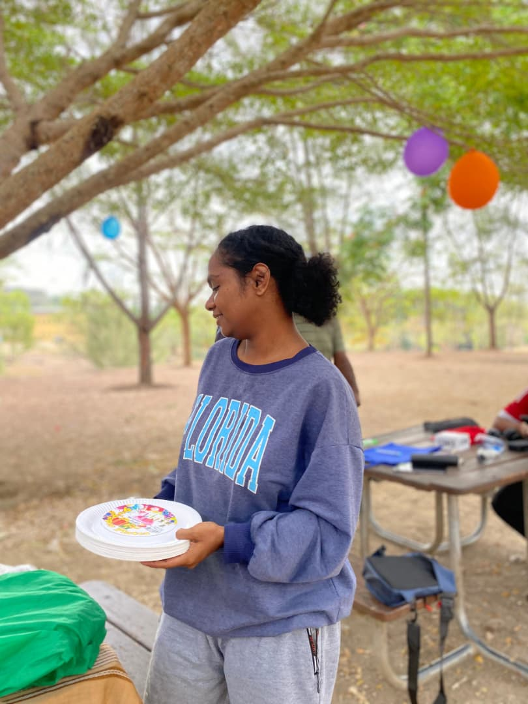

Happy Birthday TemiHAVE THE BEST DAY TODAY
Memories from this year! ❤️
Isaiah 26:3 – “You will keep in perfect peace those whose minds are steadfast, because they trust in you.”
Isaiah 40:31 – “But those who hope in the Lord will renew their strength. They will soar on wings like eagles; they will run and not grow weary, they will walk and not be faint.”
Psalm 46:1 – “God is our refuge and strength, an ever-present help in trouble.”
Isaiah 40:31 – “But those who hope in the Lord will renew their strength. They will soar on wings like eagles; they will run and not grow weary, they will walk and not be faint.”
Philippians 4:13 – “I can do all this through him who gives me strength.”
 Psalm 46:1 – “God is our refuge and strength, an ever-present help in trouble.”
Psalm 46:1 – “God is our refuge and strength, an ever-present help in trouble.”
Psalm 46:1 – “God is our refuge and strength, an ever-present help in trouble.”
Romans 8:38–39 – “For I am convinced that neither death nor life, neither angels nor demons, neither the present nor the future, nor any powers... will be able to separate us from the love of God that is in Christ Jesus our Lord.”
John 14:27 – “Peace I leave with you; my peace I give you. I do not give to you as the world gives. Do not let your hearts be troubled and do not be afraid.”

Philippians 4:7 – “And the peace of God, which transcends all understanding, will guard your hearts and your minds in Christ Jesus.”
Isaiah 26:3 – “You will keep in perfect peace those whose minds are steadfast, because they trust in you.”
Psalm 118:24 – “This is the day that the Lord has made; let us rejoice and be glad in it.”
Dear Temi
I pray that your heart may be filled with peace. Remember the words of Jesus: “Peace I leave with you; my peace I give you. I do not give to you as the world gives. Do not let your hearts be troubled and do not be afraid” (John 14:27). Even when life feels heavy, “the peace of God, which transcends all understanding, will guard your heart and your mind in Christ Jesus” (Philippians 4:7). Keep your trust in Him, for “You will keep in perfect peace those whose minds are steadfast, because they trust in you” (Isaiah 26:3).
When you feel weak or weary, lean on God for strength. His promise is sure: “But those who hope in the Lord will renew their strength. They will soar on wings like eagles; they will run and not grow weary, they will walk and not be faint” (Isaiah 40:31). Hold onto this truth: “I can do all this through him who gives me strength” (Philippians 4:13). Never forget that “God is our refuge and strength, an ever-present help in trouble” (Psalm 46:1).
And above all, never doubt your worth and value in God’s eyes. You are His masterpiece. As the psalmist declares: “I praise you because I am fearfully and wonderfully made; your works are wonderful, I know that full well” (Psalm 139:14). Remember, “your bodies are temples of the Holy Spirit, who is in you… you were bought at a price. Therefore honor God with your bodies” (1 Corinthians 6:19–20). Nothing can separate you from His love: “For I am convinced that neither death nor life, neither angels nor demons, neither the present nor the future… will be able to separate us from the love of God that is in Christ Jesus our Lord” (Romans 8:38–39).
So take heart. You are deeply loved, eternally valued, and divinely strengthened. May peace, strength, and love guide you today and always.
I love you, always on your side.